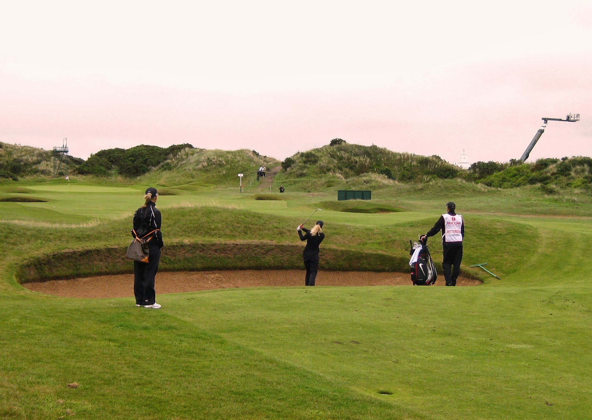
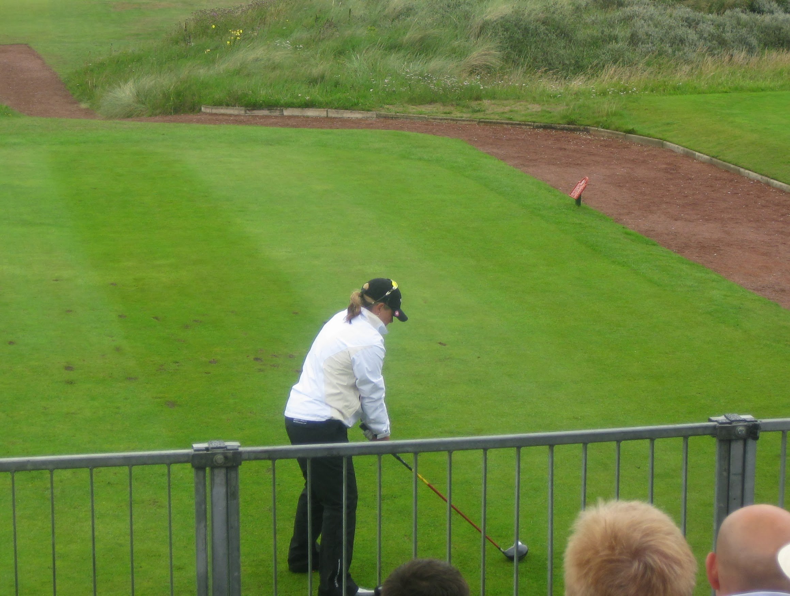
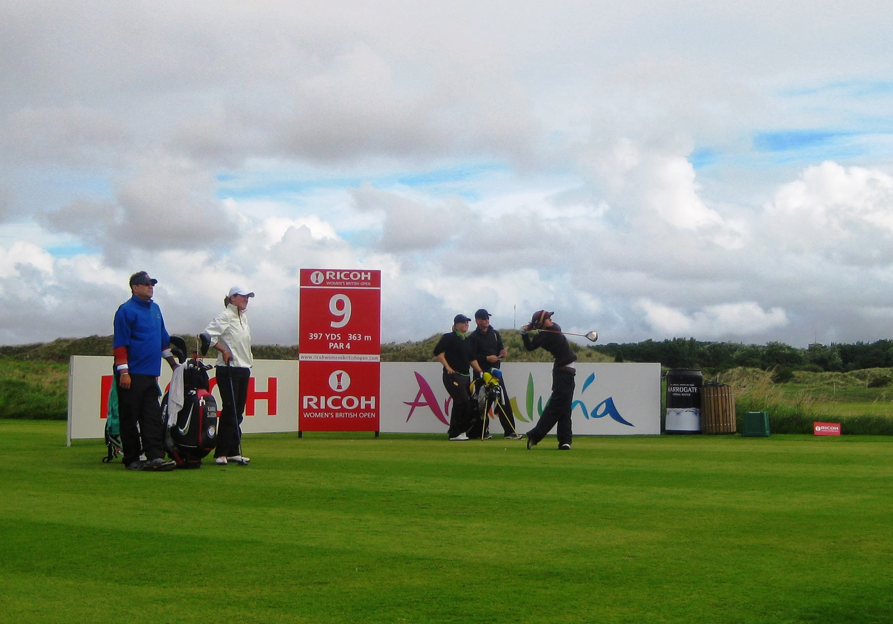
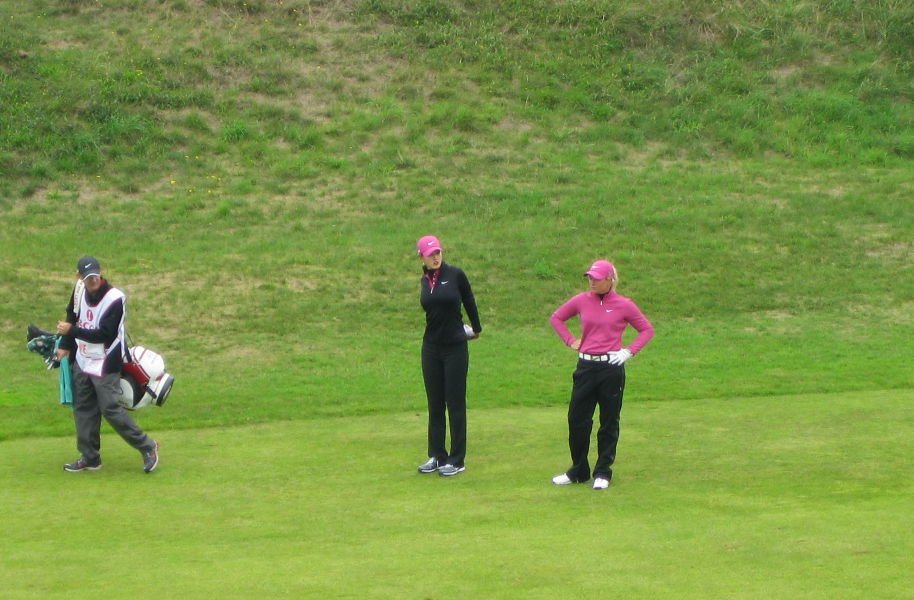
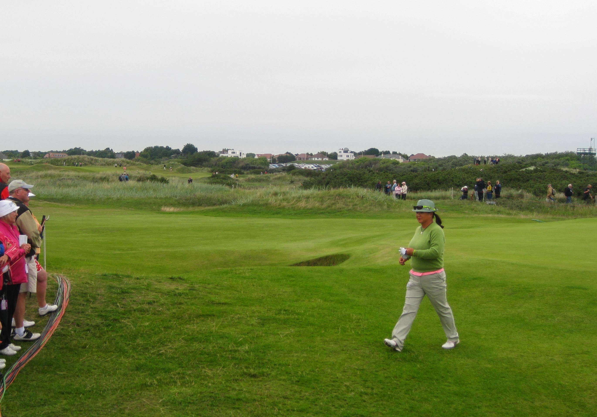
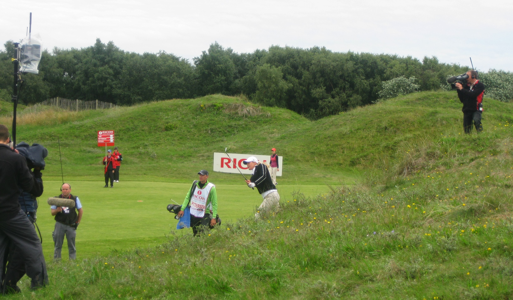
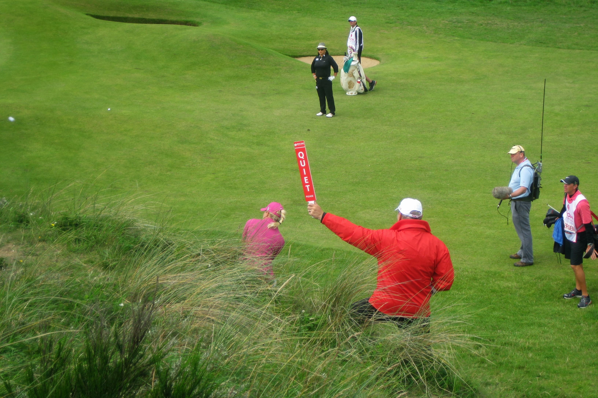

Women's British Open 2010
Women's British Open 2010 - Tuesday July 27th - Pro Am
I got to Birkdale in nasty drizzle. I discovered a new innovation this year. Two shotgun pro-ams - one am and one pm. I wandered out to the 14th green where I found Cristie Kerr. She had given one of her playing partners bunker and swing tips. When he hit a good tee shot on the 15th she told him he owned her $150. He said she was reasonably priced. She retorted that he also owed her $150 for the bunker advice. Karen Stupples was next up and she greeted me with a polite Good Morning. There was such a big gap after Karen's group that I wandered over to the 13th fairway. Arrived to see Mika Miyazato helping one of her playing partners find his ball in some really nasty stuff. She was playing with a group of her compatriots, so it seemed strange when she shouted "Found it". I headed off to the practice range/pitching green where I spied Larry, the blogging caddie, caddying for Kris Tamulis, was sporting a basball cap with a towel wrapped round his head and neck.
{kind=link}
On my way back to the practice green I came across Tutta teeing off at the 10th and decided to follow her for a few holes. Recognised a couple of faces. Her mum was following, as was David Leadbetter. On the 11th David Leadbetter disappeared off, and headed towards the group in front. I left Tutta's group holing out on the 11th and wandered around in time to see the Wie group on the 12th green. BJ was fussing around down on the green whilst Bo was up on the hillside in spectator mode. Waited by the 13th tee for Tutta. After much discussion with Dave Brooker about distance to various bunkers and lines to aim for off the tee, Tutta changed her club and proceeded to hit her tee shot into the large fairway bunker she was most wanting to avoid. As I was the only crowd following the group I opted to follow them down the fairway rather than heading over behind the ropes. It made a nice change to walk on the short stuff rather than in the long grass. Tutta advanced the ball a short way down the fairway out of the bunker and then hit a gorgeous iron shot to three feet from the pin.
Caught up with Wie on the 14th green. Another new experience for me. Wie being asked for an autograph and her saying yes! Tutta hit a lovely shot on 14 to 6 feet and made a nice birdie. Decided it was time for a bacon roll and a cup of tea. Sun came out so it was off with the waterproof trousers. Anna Nordquist, Brittany Lincicombe and footballer Alan Hansen were on the practice green. Headed out to the 14th green to watch Anna Nordquist starting the afternoon Proam then watched Yani Tseng teeing off on 10. Sat in the stand behind the 1st tee to watch Chritina Kim's group tee off. She got a big round of applause and said Hi to everyone loudly. Decided that after 6 hours of fresh air it was time to head for home.

{kind=link}
Women's British Open 2010 - Wednesday July 28th - Practice
Arrived at Birkdale at about 9.00am. Weather was a little better than yesterday. Started the day behind the 11th tee with Paula Creamer and Morgan Pressel playing as a two. Paula was asked for an autograph and photo, Morgan was not. She didn't seem happy to be ignored. Headed off down the 11th fairway and crossed over at the green and headed for the 7th green. Was a bit confused because they have changed the whole layout of that hole since 2005. The tee has moved through 90 degrees. They did it when the men were there in 2008. Yani Tseng was playing the hole when I arrived. As it was the practice round I hopped over the rope and got a view of the hole that will be unavailable the rest of the tournament.Next group up at the 7th tee was Catriona Matthew, Cristie Kerr, Suzann Pettersen and the local British Amateur winner Kelly Tidy who is a member of Royal Birkdale. Cristie Kerr and Catriona Matthew were having a great chin wag as they walked down to the green. David Leadbetter and his daughter were out walking with Tutta. Although all the tee shots had landed on the green, much bunker practice ensued. Watched all three of them tee off on number 9. They disappeared down the fairway having a good laugh at something. Waited for the group behind to tee off on 9. Pernilla Lindberg and Azahara Munoz were mugging for the camera as Pernilla's mum was taking photos. Headed off behind the ninth tee and found myself by the second green where I'd never been before. When following a particular group the 2nd green has to be viewed from a distance otherwise you can't catch them up on the 3rd. I also caught a glimpse of the 3rd tee which is well hidden up behind the second green and inaccesible for spectators.
Up by the 10th green Tutta, Dave Brooker and David Leadbetter were having an enormous laugh about something or other. I stood directly behind the 11th tee and managed to video Tutta's tee shot. It was a super shot right down the middle of the fairway. Kerr was up next and striped one down the middle as well. Kelly Tidy wasn't so lucky. Her first tee shot went way right. Her re-load was a lot better. Wandered off back to the 14th green area when the weather took a turn for the worse. Almost lost my umbrella to the wind. Went to get an early bacon roll and cup of tea so I could shelter under their awning thing. Ended up sitting next to Captain Alison Nicholas. Just got settled when the heavens absolutely opened as a big squall came through. A second followed close behind so it was time to put the waterproof trousers on.
Tutta and co had reached the 14th green by the time I passed by. Both Kerr and Tutta blazed their first tee shot over the back of the green but hit nice second attempts. Both of them said goodbye to Kelly at this point as they had had enough and were heading off for lunch. Decided I had had enough for the day and headed off back home to rest up for the tournament proper.

{kind=link}
Women's British Open 2010 - Thursday July 29th - Round 1
Arrived at the course at 9.00am. Weather looked threatening. A quick check on the leaderboard had Juli Inkster and Jiyai Shin leading on -1. Made my way towards the 10th tee. The 3rd group of the day - Jiyai Shin, Anna Nordqvist and Becky Brewerton had just teed off. Next up was LD, Pressel and Mika Miyazato followed by Catriona Matthew, Paula Creamer and Florentyna Parker. Last group watched there was Ai Chan, Meliisa Reid and Karrie Webb who wad just got to -3.Wandered over to the 14th green in time to see the 2nd group of the day which included Juli Inkster and JJ. They were followed by the Shin, Nordqvist, Brewerton group. Anna made a lovely long birdie putt to get back to +2. Becky Brew just missed a birdie to stay +1. LD and her group were up next. Catriona Matthew, Paula Creamer, Ai Chan, Meliisa Reid and Karrie Webb also passed through the 14th whilst I was stood there. The weather took a turn for the worse, so on with the waterproofs.
By 11.00am it was time to make my way to the stand behind the 1st tee. Luckily the rain had abated and it was just a tad windy. I sat right at the back overlooking the steps so I didn't have to get up and down every time someone arrived/left and no heads where in the way. First up was Iben Tinning, Amy Jang and Janice Moodie, who got a very good reception. Karen Stupples also got a good reception but nothing like that given to the local member and British Am Champ Kelly Tidy. Xtina Kim remains as popular as ever and gave the crowd a really big smile when introduced. Sophie Gustafson was up next. Her tee shot looked good but just kept a bit left and ended in the fairway bunker. Suzann Pettersen arrived at the 1st tee looking a right numpty with one of the Nike woolly hats on top of one of her Nike baseball caps. Michelle Wie arrived and she and Suzann had an animated Nike wardrobe comparison. Michelle was obvioulsy giving Tutta a hard time about the hat situation. Much laughing and joking between the 2 of them ensued until Tutta went with the baseball cap only look.
Alfie was also sporting the numpty hat look but stuck with it. Once she, Kerr and Bam Bam had teed off, I set off into the countryside, towards the 7th hole. The 7th hole was never a great spectator hole but with the change of direction of the tee, and the way it was roped off, it is now even worse, but the mega plus side is that the old 7th tee which was previously inaccesible, is now a perfect viewpoint for the 6th hole 2nd shot onwards. Got there in time to catch up with the Stupples group. Karen's tee shot was quite a bit left and she had to lay up. She completely duffed her 3rd shot and made bogey. Michelle Wie had hit a great tee shot long and bang in the middle of the fairway. Tutta was a long way back from her behind the RHS fairway bunker as was their Japanese playing partner. Kitada hit her 2nd left of the fairway and into the hazard. Having penalty dropped, she hit into the front left greenside pot bunker and then three putted. Ouch. Whilst this was happening Michelle and Tutta were chatting in the fairway. Wie's second was long in the fringe at the back of the green despite Mrs Wie shouting "Sit, Sit, Stop, Sit" in my right ear. Tutta's 2nd ended up just short and left of the green avoiding the bunker and her lovely chip left her a short birdie putt which she made. Wie's chip from the back was weak leaving a 15ft birdie putt and she made just par.
 At this point a bacon roll and a cup of tea were calling. I mossied over to the 7th to see Wie miss her birdie putt there and Tutta missing her par after hitting into a greenside bunker. Made my way back over the 8th and 11th fairways and up to 10th green, then over to the crossing point on the 13th fairway close to the green where Pernilla Lindberg's mum was not so happy with life. Daughter was +11 after 12. Trogged up the hill and down again by the 13th green/14th tee and rested up with bacon roll and tea for 30 mins. Headed back to the 14th green to watch the main groups go through. Sophie was obvioulsy hedging her bets on the weather, having her rain jacket draped over her shoulders.
{kind=link}
The flag was in a really difficult spot over to the right front of the green behind one of the front greenside bunkers. Most players seemed to have decided to play safe, hit the middle of the green, two putt and move on. Wie, Pettersen and Kitada did just that. Bam Bam and Alfie were chatting on their way up to the 14th, Alfie still sporting the silly headgear. Having watched that group play 14 I headed to the refreshment area for a beer and to watch a bit of the TV coverage before heading for home.
Women's British Open 2010 - Friday July 30th - Round 2
 Arrived at Royal Birkdale at 8.45am and found the first group of the day of Janice Moodie, Amy Yang and Iben Tinning teeing off on the 10th. Next up was Karen Stupples' group. Wondered where she had got to as only 2 players and three caddies made their way past me. Turned round and Karen was stood on the tee already, stony faced. A double bogey, bogey run will do that to you. In the next group Sophie Gustafson also mooched her way onto the tee by herself looking less than chuffed. She too had just bogeyed nine. She hit a nice tee shot on 10. Xtina immediately shouted "Oh God, Get left" and then "Sit" when hitting her tee shot.{kind=link}
Tutta also appeared on her lonesome on the 10th tee but she had at least made par on nine. Wie looked miffed as she walked on the tee. She had just made bogey. She stared very hard after her tee shot. The marshalls were signalling it was going leftish. She was mad with herself. She threw an imaginary something to the floor and stood off to the side of the tee with her hands on her hips. It turned out she was in the fairway bunker. She could only advance it out a tad. Cue another bogey. Kerr, BamBam and Alfie were next. Alfie's trudge to the tee gave away the fact she had just bogeyed nine. After they had teed off, I followed the usual plan and wandered over to the 14th hole. Ken Brown was rolling balls on the green and making notes. He got a right ribbing from the crowd when he failed to hole the one he aimed at the flag. Took a while for Janice Moodie's group to appear. The crowd then increaed significantly as the local Birkdale lot were out supporting Kelly Tidy in Karen Stupples' group.
Sophie's group was next to play. She and Kitada had both putted out before Xtina arrived even though she was away. This was because Xtina was using the portaloo up at the 14th tee and seemed to be taking ages to get all her layers sorted out. Tutta was hitting first in her group being 4 under for the day. She liked her tee shot but it came up short but leaving a downhill putt. Wie was hitting last being 5 over for the day. Tutta really thought she'd made her birdie putt but it just slipped by. On 15, Tutta and Wie hit lovely teeshots. Kitada got into trouble and had to hack out up the fairway. Tutta obviously wasn't going for the green in 2 but came up just short and left of the green. Wie went for the green but ended up in the left hand front greenside bunker close to the big front wall. Her reaction when she saw the ball says it all. "Ooh Ugly". She couldn't go for the flag and did well to get out where she did, aiming to the lower level of the green away from the flag. Tutta hit a nice chip up onto the green but the birdie putt just missed. All three got their par.
 It's a long trog back to the 16th tee so I hung around at 15 to watch the group behind come through. Alfie completely duffed her third shot and made bogey. Kerr and Bam Bam both birdied. Crossed the 16th fairway below the green and watched Wie and Tutta putt out. Both missed what looked like makeable birdie putts. Headed off towards the landing zone on the 17th fairway. The first ball I saw land was just on the left of the fairway. Tutta was hitting first so Kitada would be next. However, the next ball went bounding down the fairway to Wie length. Turns out I hadn't seen Tutta's ball land because she had hit it left into some nasty stuff on the side of the huge mound on the LHS of the fairway. All she could do was lash it up the fairway. Hit it nicely and left herself a birdie putt, but it just missed. The 18th is a hell of a hole to walk so I stayed put as Cristie Kerr was also in trouble having hit it onto the top of the large mound ending up behind one of the TV's antennae things. A rules official had to be called. Worth, her caddy and a technician had to carry the antennae away and we in the crowd had to stand well back as she hacked it out well into the fairway.
{kind=link}
Left them to it and wandered round to see the results of the Wie/Tutta teeshots. Both were in the fairway. Both hated their approach shots. Wie ran across the fairway after hitting hers and practiced the shot she should have hit. Tutta slammed her club into the ground in frustration. Tutta ended up in the right greenside bunker with a horrible stance one foot in the bunker one bracing herself against the back. She got up and down. Went for a beer and sat in front of the leaderboard and the big TV screen. Play was very slow and the rain was horrible so decided to go home and catch the rest of the 2nd round on the Beeb at home.
Women's British Open 2010 - Saturday July 31th - Round 3
As it was the weekend, I got a bit of a lie-on, not getting to the 10th tee until about 10 0'clock, when I came across Angela Stanford. She was palying with Anna Nordquist. I wandered down the 10th fairway to take up position at the back of the 10th green. Found Larry the Caddie and Kris Tamulis holing out. The weather wasn't playing ball, and it was full waterproofs by the time Paula Creamer arrived. I changed my viewing spot, heading over to the new spot over the 6th fairway. Karrie Webb, who was playing with Ai Miyazato, was over in the right hand rough. LD and Becky Brewerton were playing together. The sun came out as the day went on. I caught us with Webb and Miyazato on the 11th, plus Becky Brewerton and LD. Headed back to the practice green area for my bacon butty lunch. Brittany Lincicome and Suzann Pettersen were preparing for their rounds. Back out at the 11th I came across Terry Mac and In Kyung Kim. I headed to the back of the 10th green, to find Tutta had joined the spectators on the bank. After a bogey, she was a very unhappy bunny whilst waiting on the 11th tee. Cristie Kerr and Yani Tseng managed to stay off the banks. Juli Inkster and Xtina Kim were playing together. Tutta was having a so-so day, shooting a 1 under 71, and Cristie Kerr was one worse with an even par, but both had all to play for on the last day.
{kind=link}
Women's British Open 2010 - Sunday August 1st - Round 4
I started the day at the 14th green watching Anna Nordquist. Kris Tamulis and Larry the Caddy were having a good final day, finishing with a 3 under final round. Crossed over to the 10th tee in time to see LD tee off. Headed to sit in the stand behind the 1st tee. Ai Miyazato was smiling as ever. I also saw Karrie Webb, Sophie Gustafson, Paula Creamer, in her usual Sunday pink, Juli Inkster, Azahara Munuz, Michelle Wie,and Becky Brewerton .I then set off for the 6th, where Azahara Munoz was playing fom the bank, and Amy Yang from the greenside bunker. Suzann Pettersen was also on the bank. Back at 10, Kerr and Pressel were playing together, and Karen Stupples was working as an on couse commentator for the Beeb. Xtina Kim , who was playing with Tutta, ended up high up on the bank. I headed back to the spectator village to watch the end of play, and spotted Yani Tseng , the eventual winner, palying the 10th.